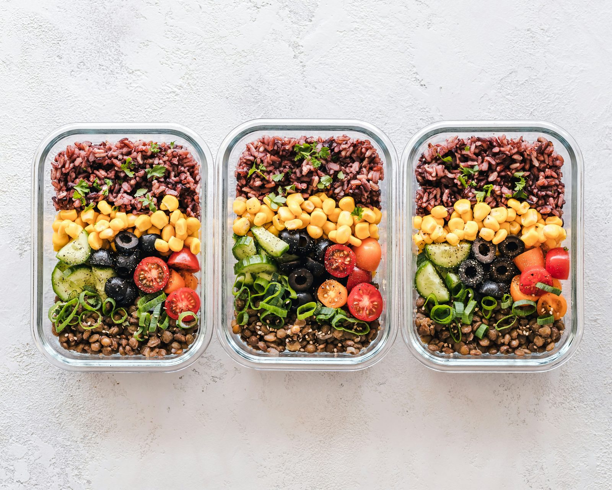

Каждый, кто отслеживает калории или БЖУ, рано или поздно упирается в одно и то же противоречие: домашняя готовка впрок даёт точный контроль, но еда вне дома экономит реальное время и усилия. Ни один вариант не является универсально «лучше» — правильный баланс зависит от вашего бюджета, графика и того, насколько точность реально нужна для ваших конкретных целей.
Стоимость: готовка впрок уверенно выигрывает
Домашняя еда, приготовленная порциями, обычно стоит малую долю от эквивалентного блюда в ресторане, так как вы платите только за сырые ингредиенты, а не дополнительно покрываете труд, накладные расходы и наценку. Покупка белка, круп и овощей оптом и готовка нескольких дней еды за раз ещё больше снижает стоимость на порцию, делая готовку впрок одним из самых надёжных способов сократить бюджет на еду без потери качества или количества.
Точность калорий и БЖУ: готовка впрок гораздо точнее
Когда вы взвешиваете и готовите свои ингредиенты сами, вы точно знаете, что в каждом блюде — точный белок, углеводы, жиры и общие калории, проверяемые кухонными весами и базой данных питательности. Ресторанные блюда гораздо сложнее точно отследить: размеры порций варьируются между визитами, скрытые масла и сливочное масло добавляют неучтённые калории, и даже опубликованная информация о питательности ресторана — это среднее значение, которое может не точно соответствовать конкретно вашей тарелке. Для тех, у кого точные цели по телосложению или результативности, этот разрыв в точности значит немало.
Время: у еды вне дома реальное преимущество
Здесь еда вне дома реально выигрывает. Не нужны покупки, нарезка, готовка или мытьё посуды — кто-то другой уже всё это сделал. Для людей с реально ограниченным временем, особенно в периоды напряжённой работы или с непредсказуемым графиком, время, которое требует готовка впрок (обычно 1-2 часа в неделю на готовку порциями, плюс ежедневные походы за покупками, если не готовить впрок), — реальная цена, которую еда вне дома просто убирает.
Качество еды и контроль ингредиентов
Готовка впрок даёт полный контроль над качеством ингредиентов, способами приготовления и количеством масла или приправ — действительно ценно для тех, кто справляется с конкретным пищевым ограничением, чувствительностью к продуктам, или просто хочет больше контроля над тем, что именно попадает в еду. Рестораны сильно различаются по качеству и прозрачности; некоторые с радостью идут навстречу с заменами или предоставляют подробную информацию о питательности, другие — ни то, ни другое, что делает это вопросом выбора ресторана, а не фиксированной разницей категорий.
Разнообразие и удовольствие от еды
Еда вне дома предлагает практически неограниченное разнообразие без усилий по изучению новых рецептов или поиску необычных ингредиентов самостоятельно. Готовка впрок, особенно при одинаковом подходе неделя за неделей, может стать однообразной, что представляет реальный риск для приверженности — план питания, ощущающийся как рутинная обязанность, сложнее поддерживать, чем тот, что всё ещё включает приятное разнообразие, независимо от того, насколько он обоснован с точки зрения питания на бумаге.
Реалистичная золотая середина
Немногим людям нужно выбирать что-то одно исключительно. Распространённый практический подход — готовить впрок основную часть будних приёмов пищи, где стабильность и стоимость важнее всего, а время обычно наиболее ограничено, при этом позволяя себе еду вне дома для социальных случаев, выходных или редкого удобного приёма пищи, когда времени реально не хватает. Это даёт большую часть преимуществ готовки впрок по стоимости и точности, сохраняя удобство и разнообразие еды вне дома для моментов, когда это важнее всего.
Какой подход подходит вам?
Если бюджет — существенное ограничение, или у вас есть точные цели по калориям и БЖУ, которых нужно стабильно достигать, приоритизация готовки впрок для большинства приёмов пищи послужит вам лучше. Если ваше главное ограничение — время, или вы высоко цените разнообразие еды и социальные приёмы пищи, включение большего количества еды вне дома — при осознанном выборе, когда вы это делаете — вполне разумный подход. Устойчивый ответ для большинства людей находится где-то между двумя крайностями, а не на одном из концов.
Частые вопросы
Сколько денег реально экономит готовка впрок?
Домашнее блюдо, приготовленное впрок, обычно стоит малую долю от эквивалентного ресторанного блюда, часто экономя значительные деньги на порцию при приготовлении порциями с экономичными ингредиентами вроде круп, бобовых и оптового белка.
Всегда ли в ресторанной еде больше калорий, чем в домашней?
Не всегда, но часто — рестораны часто используют больше масла, сливочного масла и порции крупнее типичной домашней готовки, и реально сложно узнать точную калорийность без опубликованной информации о питательности.
Можно ли есть вне дома и всё же достигать целей по калориям и БЖУ?
Да, с большими усилиями — проверка информации о питательности заранее, выбор ресторанов, публикующих точные данные, и осознанный выбор меню делают это возможным, хотя обычно менее точно, чем взвешивание домашней еды.
Сколько времени реально занимает готовка впрок в неделю?
Обычная сессия готовки порциями на несколько дней еды обычно занимает 1-2 часа в неделю, что часто меньше общего времени, чем совокупные ежедневные решения и походы, связанные с регулярной едой вне дома.